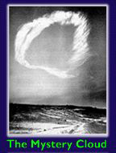

1963
1963 1 jan. Årets motto är "Lät oss vara den segerrika härskaren"

Den 28 februari 1963 över Arizona, USA, visade sig en konstellation av sju änglar inför pastor William Marrion
Branham. Dom lämnade honom i form av ett ringformat moln. Dessa sju änglar kom från Gud, avslöjade för honom Bibelns
förseglade mysterier i Daniels bok och Uppenbarelseboken, som skall avslöjas i den yttersta tiden.
Källa: http://endtimemessage.info/wmb.htm
Se även molnformation av Jesus ansikte över Korea 1950
Se även ären 1933, 1946 och 1963.
Världen påverkas: 1963: The Beatles: John, Paul, George och Ringo, slår igenom i hela
världen med sin popmusik, Tema: Kärlek.
The Beatles andra singel, Please Please Me, släpptes 11 februari 1963 och gick rakt in på förstaplatsen på
brittiska försäljningslistan.
Succésinglarna avlöste sedan varandra, och i januari 1964 gick de för första gången in på den amerikanska
Billboard-listan Top Pop Singles Chart.
Den 4 april skrev de historia då alla fem singlarna överst på listan var deras, med Can't Buy Me Love överst -
ett rekord som fortfarande inte slagits.
Positiv kuriosa, som hjälpt medicinska forskningen, många sjuka och lugnat misstänkt sjuka människor:
Den första kommersiella datortomografen kommer och kallades "EMI-scanner".
The Beatles skivintäkter gav helt enkelt så stora inkomster att skivbolaget EMI bestämde sig för att satsa en
pengar del på vällovliga forskningsprojekt.
Den stora idégivaren till principen för datortomografen, Hounsfield, fick då möjlighet att utveckla sin idé till
produkt.
{kind=link}
Rachel Carson ger ut boken Tyst vår - om hur DDT och andra miljögifter hotar vår planet.
8 feb. 26 redan gifta par välsignas.
31 maj Unification Church registreras hos myndigheterna i Japan.
24 juli 124 par blir välsignade.
26 juli Bidragets ceremoni.
Alla tings dag. (1 maj månkal.)
1 aug. 40 dagars sommar-witnessing.
15 sep Specialmöte för undervisare i Principerna hålls på hösten.
5 dec. Ett sjudagars huvudmöte om Principerna hålls i Tae Gu.
22 dec. Medlemmarna i Seoul för i uppdrag att vittna till 70 kyrkor i staden.
25 dec. 40 dagars vinter witnessing.